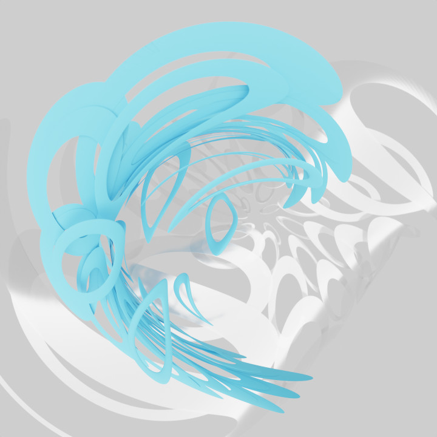
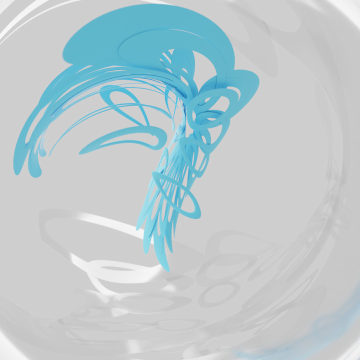

I made this inserting two Torus and adding an array modifier and setting them to have an object offset.
Then I attached the object offset to a light with no power, and I just moved, scaled, and rotated
both of them until it looked like how I wanted it to look. I also added a simple deformer, That
adds the twisted effect.
For the glass texture, I mixed a Principl BDSF and a Transparent BDSF. For the Principle I just
Turned the Metallic all the way up and Roughness all the way down. To me, this style looks
more like "Frutiger Aero" than "Metalheart". It's like Metalheart if it was soft and smooth. -Lil'D